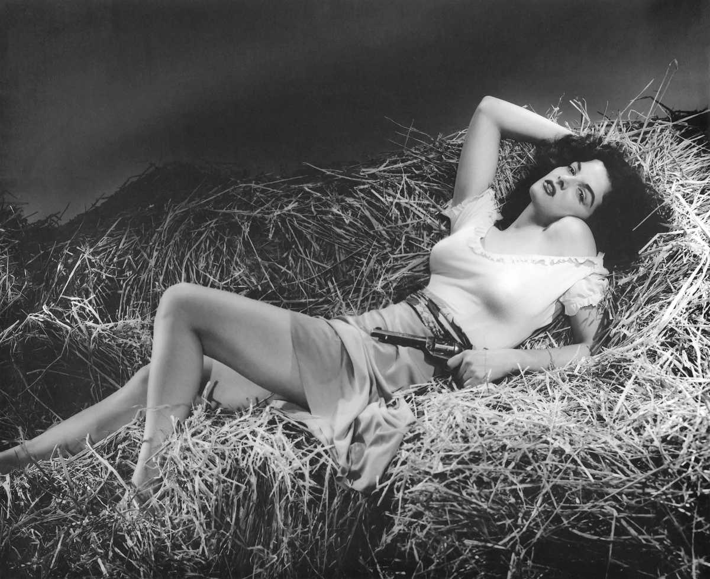

Examples of Censorship in Movies and TV Shows
Steven Universe
During the song "What Can I Do For You" from Steven Universe, the characters Rose Quartz and Pearl dance and fuse together. The UK deemed parts of the dance too sensual and censored them by replaying clips of previous scenes until the "inappropriate" scenes had passed.
Censored Version
Uncut Version
Elvis Presley
In 1956 Elvis Presley appeared twice on The Ed Sullivan Show and his scandalous hip movements were not censored in any way. In his 1957 appearance on the show CBS censors decided to crop out the lower half of his body.
Elvis's "Hound Dog" on The Ed Sullivan Show
Jane Russell
In the 1941 movie The Outlaw, Jane's breasts were considered too explicit for the Hollywood Production Code Administration who delayed the release of the film. 37 reshoots were requested of the actress and after being shelved twice, the film was eventually distributed in 1946.
